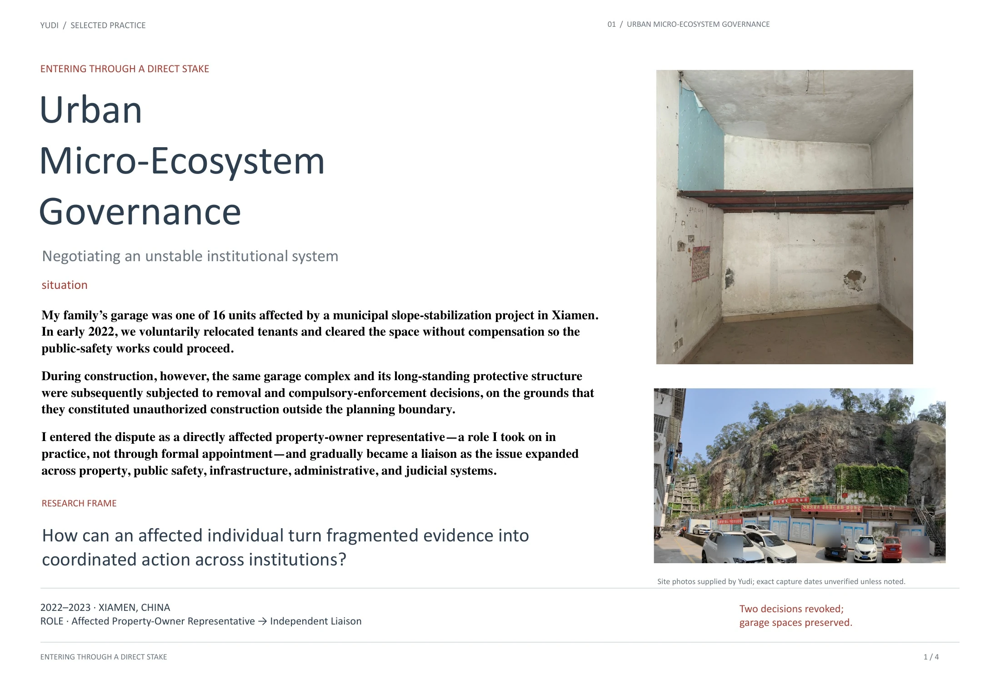
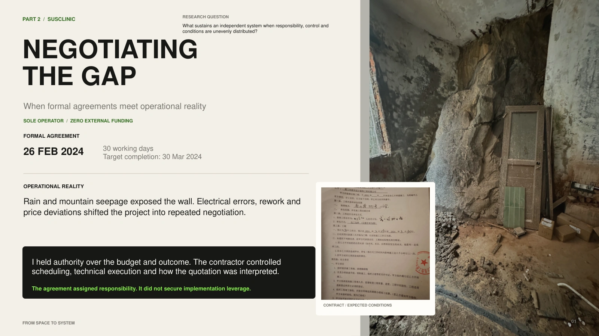
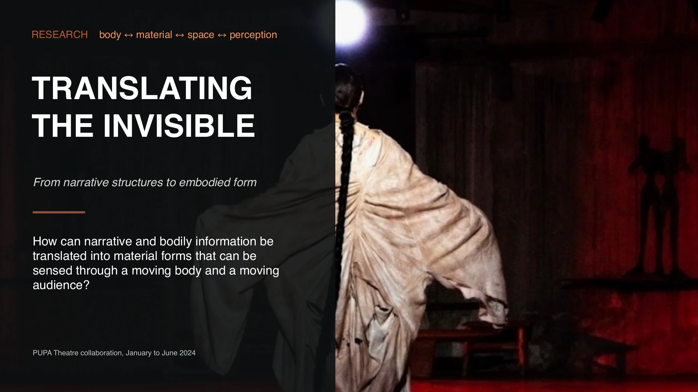
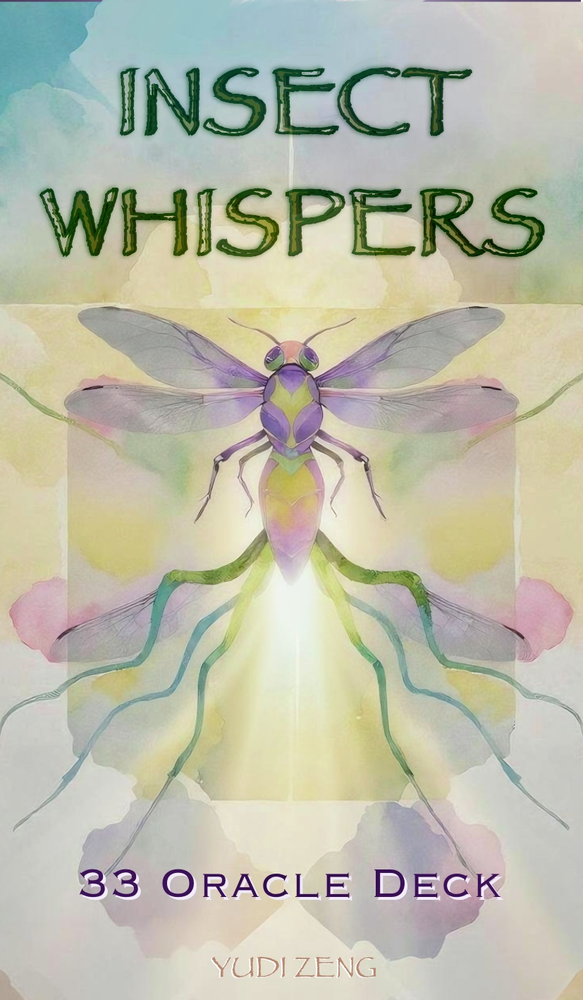

YUDI ZENG
I work where people, places, materials, and meanings meet.
Across different contexts, I make, observe, coordinate, and research—following what changes when an assumption meets the reality around it.
INDEX / SELECTED PRACTICE
Four connected questions.

COORDINATIONUrban Micro-Ecosystem GovernanceHow can different actors build a shared basis for action within the same reality? Civic system ↗ 02
INTERDEPENDENCEFrom Space to SystemHow does a small ecosystem keep operating through relationships among its parts? Operational system ↗ 03
TRANSLATIONTranslating the InvisibleHow can feeling, narrative, and the body become perceptible form? Embodied system ↗ 04
INTERPRETATIONAI-Mediated Interpretation of Ambiguous Visual StimuliHow does AI enter while a person’s understanding is still taking shape? Research dossier · Study 0 ↗A RECURRING QUESTION
What I keep noticing
- 01
The same situation can hold different truths.
- 02
Responsibility and control do not always sit in the same place.
- 03
Interpretation can change what becomes possible next.
These projects begin in different places. Each asks what becomes visible when the first explanation no longer accounts for what is happening.
ABOUT
PROFILE
POSITION
A design-trained practitioner and independent researcher studying how people interpret and act when established systems no longer fully account for what is happening.
WHY THIS PRACTICE
Moving across cultural, material, institutional, and technological settings has made me attentive to how the same situation can be understood differently depending on who holds information, authority, responsibility, or room to act.
HOW I WORK
Observe before judging. I map how people in different positions understand the same situation before deciding what the problem is.
Work from real constraints. I begin with the resources, relationships, and limits already present rather than assuming ideal conditions.
Recalibrate through use. I allow evidence, embodied response, disruption, and dialogue to change the next move.
CURRENT DIRECTION
Currently exploring: AI-mediated interpretation, human agency, systems under uncertainty, and practice-based research.